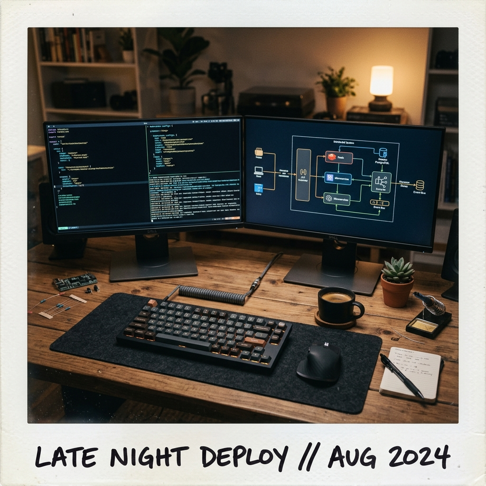

For the past years, I've been turning complex ideas into resilient software.
I'm a software engineer specialized in distributed systems, reliable backend architectures, and AI workflows... but I'm also much more than just lines of code.
I'm an engineer, but I'm also...
- 🤖 an AI-native builder who loves automating research workflows with LLMs & tool calling
- ☁️ a cloud architect who designs for zero dual-write errors and graceful failure modes
- 📚 an M.S. Software Engineering graduate constantly exploring modern systems literature
- ⌨️ a mechanical keyboard hobbyist who appreciates tactile feedback and clean tools
- ☕ a pour-over coffee enthusiast brewing light-roast single origins while debugging edge cases
- 🏃 an avid runner clearing head-space between architecture design sessions

Aksh // Tempe, AZ ☀️
What gives me energy
- Working closely with curious, mission-driven teams
- Solving complex distributed locking & consensus dilemmas
- Shipping software that genuinely empowers people
- Mentoring junior engineers and breaking down system designs
What I look for
- High-impact engineering challenges at scale
- Culture of deep ownership, curiosity, and rapid feedback
- Decoupled, event-driven architectures over monolith bottlenecks
- Teams where kindness and rigorous technical standards coexist
Stuff I'll nerd out on
- Formula 1 telemetry data and pit strategy algorithms
- Comparing Raft vs Paxos in distributed systems books
- Optimizing PostgreSQL query plans and vector indexes
- Custom mechanical keyboard switches and soldering projects
Workbench Artifacts & Snapshots

Where the magic happens ☕
Diagramming distributed nodes 📐

Vector Embeddings & RAG ⚡